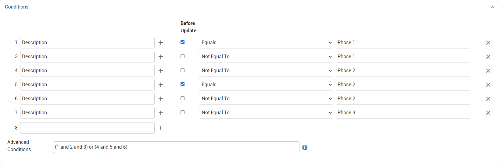
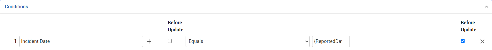

Business rules enforce constraints, provide pop-up messages, send email notifications, and perform other actions based on assigned conditions. Business rules usually paint a workflow picture; for example in Safety an incident approval process workflow is defined by a collection of business rules.
Clients may alter or add business rules so Cority works with their organizational workflow.
Default business rules are identified (in the Details section)
as “Cority Created”
and cannot be deleted. These are listed in the System Guide.
Rules that are critical to Cority’s
operation are identified as “Essential Functionality” and cannot be inactivated.
An administrator can migrate business rules from one environment to another;
see Migrating
Configurations.
While business rules trigger when a record is saved, Cority also provides functionality for "Display Rules" that trigger immediately when a field value changes.
To view the business rules defined in Cority, in the Administrator menu click Business Rules. The list displays the code, description, rule type, entity, and active status.
Business Rule layouts include two Show Record History
actions:
- Show Record History (Details) displays the standard header changes.
- Show Record History (Conditions) displays a log of each time business
rule conditions were added, deleted, or changed.
The Show Record History action on the Action List tab displays each
time a user unlinked a business rule action from the business rule.
To export business rules to a JSON file, select the
rule(s) on the list view and then choose Actions»Export
Business Rule Configurations. Conversely, you can import a
JSON file to create business rules. By default, Update
existing records will be toggled off. If you want existing
records to be updated upon import, you must toggle the setting on
before selecting a file for import. You cannot import/update a Cority-created business rule.
To copy a business rule, open it and choose Actions»Clone BR and link existing BRAs (to link the existing BRAs to the cloned BR), or Actions»Close BR and BRA(s) (to clone the BRAs as well and link the new BR to the new BRAs).
Click a code to open an existing rule, or click New.
In the Details section, enter a Code and Description, select the Entity for which the rule will apply, and enter a Priority for the rule. The priority can be any integer, and determines the order that the rule is processed if there are multiple rules. Lower number priorities are processed first.
In the Conditions section, define the business rule:
Click to select the property of the entity you wish to enforce a constraint on (note that you can also select a system setting of the type checkbox, look-up table, tree look-up, or free text).
Define the criteria (operand) that you want to apply to the property.
A third field specifies any value that the property should compare with. Depending on the type of property you select, there may be a date selector or picklist icon to help you choose a value.
To remove a condition, click the X at the end of the row.
By default, multiple conditions for the same property are treated as OR. Conditions for different properties are treated as AND. For example:
1. Country, Equals, Canada
2. Country, Equals, USA
3. Sex, Equals Male
4. DateOfBirth, Less Than, January 1, 1978
... would be evaluated logically as:
(1 or 2) and 3 and 4
The numbers correspond to the row numbers assigned
to each condition. The default logic can be overridden in the Advanced Conditions field by using the
row numbers to identify the individual conditions, e.g.
(1 and 3) or (2 and 4)
If the field must start with a specified value
for the rule to fire, select the Before Update check
box. In the following example, six conditions have been created for
the Campaign entity:
- If a user changes the Description and
clicks Save, the system will check the previous value before updating
it.
- If the previous value was “Phase 1”, the user will only be able to
change the value to “Phase 2” (conditions 1 and 2 and 3).
- If the previous value was “Phase 2”, the user will only be able to
change the value to “Phase 3” (conditions 4 and 5 and 6).

If date fields are used in a condition, they can separately be specified as Before Update or not (for example, date of termination (before update) is less than date of hire (after update)). However, if Before Update is used on either (or both) of the date fields, “Update” is the only trigger that can be used in the business rule.

You can include Query Builder/Report Writer queries
in business rule conditions to associate entities that are not already
linked. Set up the query and flag it as a Subquery (see Working
with Ad Hoc Reports), then identify it in the business rule with
the “Is Contained In” operand. You can also configure a subquery used
by a business rule to filter by one or more of the rule entity's fields;
the business rule will fire only for the configured field filter.
Examples of business rules that use a subquery:
- For an incident that resulted in a death, at least one witness must
be provided.
- A clinician must be alerted when working on a clinic visit for an
employee who has been diagnosed with influenza.
- A risk assessor must be alerted when the agent is a dermal skin notation.
You can configure a business rule condition to assess the value of a subquery, e.g. 'Subquery Y' 'Greater Than' '75'. When the subquery runs, the 'first row, first column' is checked for a value, and that value is used for the condition's evaluation. Similarly, the value of the first cell in a subquery can be used by a Change action to set a look-up or tree field value on a layout.
In the Trigger section, define where and when the rule will fire.
Select the Environment where the rule will fire: Cority Platform (includes Portal), myCority, or all three.
For information about the Data Retention checkbox, see Archiving or Purging Data and the Cority System Guide.
To define where the rule will fire, select one of the following options:
Insert - The rule will fire when a new record is saved
Update - The rule will fire when a record is updated
Delete - The rule will fire when a record is deleted
New - The rule will fire when a new record is being created through an import, the default prompt is yes, the prompt is null, and the related action is either Change or Method only (New will not work with other actions, such as Email)
If the Before Update check box is selected beside a Condition above, Update will be selected in the Trigger section and the other checkboxes will be disabled.
The Rule Type determines the kind of rule you are creating:
Message/Action - This type of rule will always fire after the original triggering action has completed (specify which actions should run on the Action List tab). The Message box will be disabled for this type as it is not used. You can enter a Prompt which will be displayed to the user confirming if he/she wishes to execute the defined actions for this rule. No prompt is displayed if the rule was fired from a list, in which case the Default Prompt Answer is used to determine whether or not the defined actions will run.
Hard Enforce - This type of rule fires before the original triggering action completes. This rule will require all conditions to be false in order for the original action to continue or else it will be halted. Enter a Message that is displayed to the user if the conditions do not pass, instructing the user what to do next. Prompt and Default Prompt Answer are not used for this type of rule.
Soft Enforce - Similar to Hard Enforce, in that the conditions must be false in order to continue, however Soft Enforce rules give users the choice to bypass the rule even if it does not pass. Enter a Prompt for the user to ask if he/she wishes to bypass the rule if the rule initially fails. No prompt is displayed if the rule was fired from a list, in which case the Default Prompt Answer is used to determine whether or not to bypass the rule. If the answer is set to no, then the Soft Enforce will act similarly to a Hard Enforce on lists. If set to true, it will be as if the rule does not exist.
Use the Business Rules Actions section (this section only appears after the rule has been saved) to specify actions to be performed when the rule is fired successfully. Click the icon to add an existing action, or choose from the Actions drop-down to create a new action for the rule. For more information, see Setting Up Business Rule Actions.
You can force any Change, Method, or scheduled Email actions
to be run for any relevant records without waiting for the trigger; on
the Business Rule tab, choose Actions»Add actions to
queue for records matching conditions. When you choose this action,
all immediate email or scheduled email actions, as well as immediate change
or method actions, will be added to the queue.
For Change or Method actions, you will see the list of records that match
the criteria specified in the business rule; select the desired records
and then click Add to queue.
For Email actions, you will see a list of the available time-driven BRAs
(BRAs for which the scheduled execution time is in the past are displayed
but cannot be added to the queue); select the ones you want to run and
then click Add to queue.
To view the queue, see Monitoring
the Business Rule Action Queue.